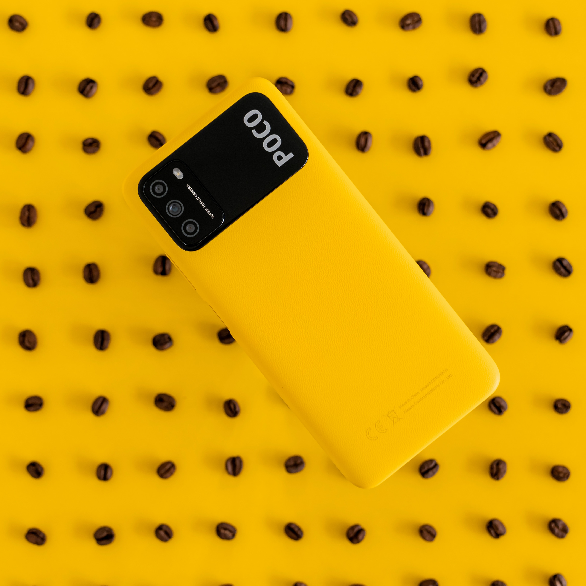

Poco Phone
POCO, formerly known as POCO by Xiaomi and Pocophone, is a Chinese company specialized in smartphones.

Mechanical Keyboard
Computer keyboards that have switches under each key, rather than the rubber membranes used in most common keyboards. Physical switches give mechanical keyboards a less "mushy" feel —
every keypress can be clearly felt, making them perfect for precise and accurate typing.

Speaker
A loudspeaker (commonly referred to as a speaker or speaker driver) is an electroacoustic transducer that converts an electrical audio signal into a corresponding sound.

Headphones
A device with parts that cover each ear through which you can listen to something, such as music, without other people hearing.

Camera
Device for recording an image of an object on a light-sensitive surface; it is essentially a light-tight box with an aperture to admit light focused onto a sensitized film or plate.
35mm single-lens reflex (SLR) camera.

Mouse
Small device that a computer user pushes across a desk surface in order to point to a place on a display screen and to select one or more actions to take from that position.

Watch
Portable timepieces intended to be carried or worn by a person. It is designed to maintain consistent motion even if movement is caused by the person's activity.

Tablet
A wireless, portable personal computer with a touchscreen interface. The tablet form factor is typically smaller than a notebook computer, but larger than a smartphone.

TWS (True Wireless Stereo)
A technology that enables two wireless earphones or speakers to communicate with each other and a Bluetooth device without any cables. All wireless devices offer more freedom and
comfort to the user, but the difference with TWS earphones is they deliver stereo sound quality.